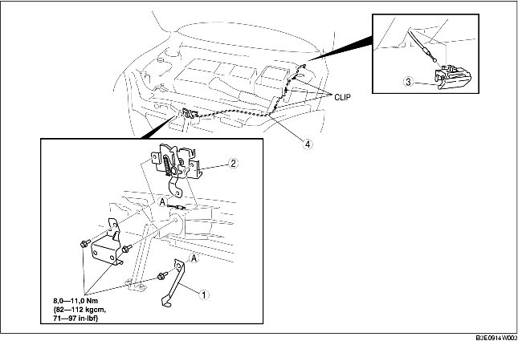

VERWIJDEREN/PLAATSEN MOTORKAPSLOT EN HANDGREEP MOTORKAPONTGRENDELING [LHD]
B3E091467001W01
1. Om het de ontgrendelingskabel van de motorkap te kunnen verwijderen moeten eerst de volgende onderdelen worden verwijderd:
-
(1) Accu (Zie VERWIJDEREN/PLAATSEN ACCU [ZJ, Z6].) (Zie VERWIJDEREN/PLAATSEN ACCU [LF].)
-
(2) Luchtinlaat (Zie VERWIJDEREN/PLAATSEN LUCHTINLAATSYSTEEM [ZJ, Z6].) (Zie VERWIJDEREN/PLAATSEN LUCHTINLAATSYSTEEM [LF].)
2. Verwijder de onderdelen in de aangegeven volgorde, zie de tabel.
3. Plaats de onderdelen in omgekeerde volgorde.
4. Stel de motorkap af. (Zie AFSTELLEN MOTORKAP.)

.
|
1
|
Hevel (5HB)
|
|
2
|
Motorkapslot
|
|
3
|
Handgreep motorkapontgrendeling
|
|
4
|
Ontgrendelingskabel motorkap
|
Aanwijzing voor verwijderen - handgreep motorkapontgrendeling
1. Trek aan de handgreep.
2. Duw de borglip met een met tape omwikkelde, kleine sleufkopschroevendraaier in de richting van de pijl en maak de handgreep los van het onderpaneel.
-
Opmerking
-
• Let er bij het verwijderen van de handgreep motorkapontgrendeling op de ontgrendelingskabel motorkap niet te beschadigen met de sleufkopschroevendraaier.
3. Trek onder de omstandigheden van stap 2 de handgreep motorkapontgrendeling naar buiten en verwijder hem uit het onderpaneel.